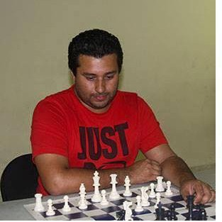
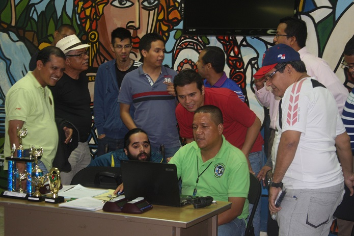
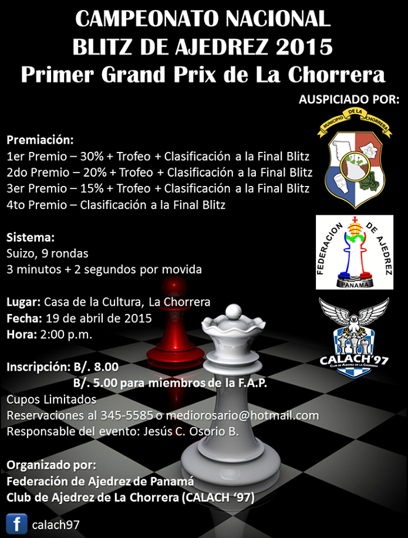
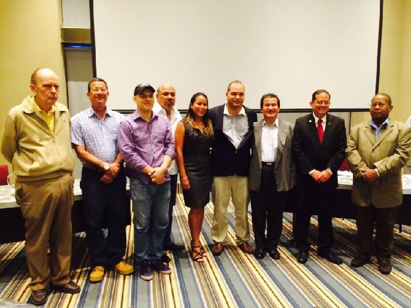
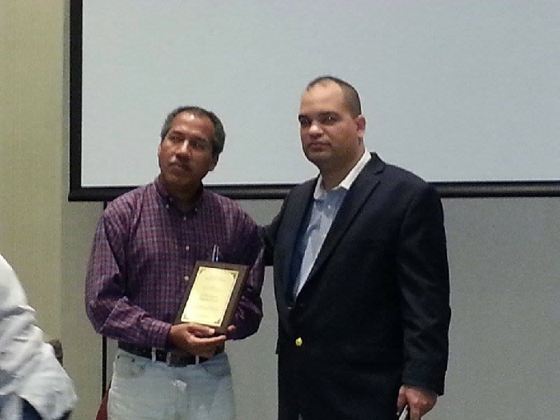
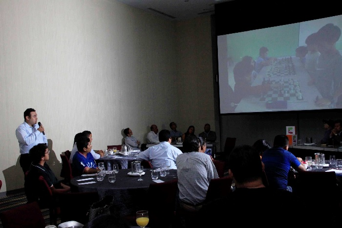
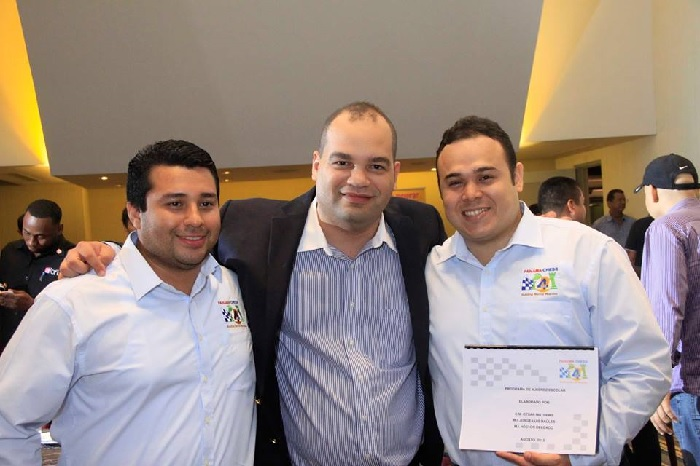

Inicio / Noticias

|
FIDE Trainers' Commission Seminars List 2015 |
||||||||
|
|
|
|
|
|
|
|
|
|
|
N |
COUNTRY |
CITY |
START |
END |
PROSPECTUS |
ID-CARD |
RESULTS |
GALLERY |
|
16 |
Panama |
Panama |
15.05.2015 |
17.05.2015 |
|
|
. |
. |
|
|
|
|
|
|
|
|
|
|
Las personas que no puedan ir a Van der's Chess Club pueden depositar los $90.00 en el Banco Nacional de Panamá a la cuenta #040000017757 a nombre de la Federación d Ajedrez de Panamá. Tomarle una foto clara a la volante de depósito y enviarla por e-mail.
Mapa para llegar al Salón de Reuniones Águila Harpía del Sortis Hotel, Spa & Casino (Calle 56 Este, Ciudad de Panamá):
Primer Grand Prix de Ajedrez Blitz
El domingo 19 de abril se realizó en la ciudad de La Chorrera, el Primer Grand Prix de Ajedrez Blitz, clasificatorio para la Gran Final de Ajedrez Blitz 2015, a finales de año, bajo la organización del Club de Ajedrez de La Chorrera (CALACH ‘97). El torneo, contó con la participación del M.I. Jorge Baúles, el M.N. Blas Barría, así como también de otros experimentados ajedrecistas de la provincia de Panamá Oeste como los Expertos Nacionales Félix Bonilla, Abel Oquendo, Carlos Neira, entre otros.
Después de 9 difíciles rondas el M.I. Baúles se alzó con la victoria con un puntaje de 8.5 pts., seguido por el E.N. Félix Bonilla con 6.5 pts., Jesús C. Osorio B. 6.0 pts., y el internacional David Herrera de Colombia con 6.0 puntos, quienes también se clasifican a la final nacional.
Clasificación:


M.I. Jorge Baúles ganador del l Primer Grand Prix de Ajedrez Blitz.
")
E.N. Félix Bonilla (Campeón Blitz de Panamá Oeste 2015)
")
Jesús C. Osorio (Sub-Campeón Blitz de Panamá Oeste 2015)

David Herrera
En el duelo local, el E.N. Félix Bonilla logró coronarse como nuevo Campeón Blitz de Panamá Oeste 2015 al vencer en su partida individual al Campeón del Año 2014, Jesús C. Osorio, quien se quedó este año con el Sub-Campeonato.
El Club de Ajedrez de La Chorrera agradece de manera especial al Honorable Tomás Velázquez, Alcalde de La Chorrera, por haber brindado las instalaciones de la Casa de La Cultura para este evento, al Dr. Enrique Sánchez por la donación de los Trofeos, al Ing. Enrique Osorio por la donación de los tableros, y al Presidente de la Federación de Ajedrez de Panamá, el Lic. José Carrillo, por habernos brindado la oportunidad y su confianza para organizar este torneo.
Tensión de los jugadores entre rondas.
 Presidente de la FAP haciendo su participación.
Presidente de la FAP haciendo su participación.
Reportaje: Jesús C. Osorio B.

CONVOCATORIA AL CAMPEONATO NACIONAL DE AJEDREZ MODALIDAD BLITZ CATEGORIA ABSOLUTA
La Federación de Ajedrez de Panamá (FAP) tiene el placer de invitar a todos ajedrecistas a nivel Nacional a participar en la I versión 2015 del Campeonato Nacional de Ajedrez Modalidad Blitz.
(Circuito Blitz Absoluto).
1. Participantes:
Pueden participar todos los jugadores y jugadoras con bandera panameña que se encuentren Afiliados a la Federación de Ajedrez de Panamá.
2. Formato de Campeonato y Sistemas de Juego
Se jugaran Seis (6) torneos satélites o clasificatorios a nivel nacional los cuales clasificarán a los cuatro (4) primeros lugares de cada evento a una Gran Final. Los 4 jugadores clasificados de cada torneo no podrán participar de los torneos clasificatorios siguientes.
Sistema Suizo a 9 Rondas (Cada clasificatorio)
Sistema Suizo a 11 Rondas (Final).
3. Control de tiempo:
Será de tres (3) minutos con dos (2) segundos de incremento para cada jugador; todo el circuito incluyendo también la Gran Final.
4. Lugares, Fechas y Sedes:
· I Clasificatorio. Domingo 19 de Abril - Chorrera
(Clubes Calach y Pedro Valdés). Resp. Jesus Osorio
· II Clasificatorio. Domingo 26 de Abril- Vander Chess Club. Ciudad de Panamá. Resp. Carlos Vander Hans
III Clasificatorio. Domingo 3 de Mayo. Santiago. Veraguas
(Club Torre Santiago en formación). Resp. José Riera
IV Clasificatorio Domingo 10 de Mayo. Club Julio Granda
Panamá. Resp. Miguel Fuentes
V Clasificatorio Domingo 17 de Mayo Van der's Chess Club.
Panamá. Resp. Carlos Vander Hans
VI Clasificatorio. Domingo 24 de Mayo. Ciudad de Colon
Club Pro Ajedrez. Resp. Yaleika Chung o Azhalia Jimenez.
Gran Final. Domingo 7 de junio. Chorrera
(Organiza Lobo Chess Club). Resp. Antonio Lobo
5. Inscripciones y Costo:
La cuota de inscripción de cada torneo será Ocho (B/.8.00) Balboas.
Quienes posean Membresía de la Federación: Cinco B/.5.00 Balboas.
6. Premiación:
En cada uno de los clasificatorios se estará premiando a los 3 primeros lugares en Efectivo;
Adicionalmente, los clasificados tendrán el derecho de competir por el acumulado de la Gran Final;
Cada sede deberá anunciar los premios respectivos basándose en los siguientes porcentajes:
65% de las inscripción asignada a premios del respectivo torneo
35% acumulado para la Gran Final.
Se garantiza una suma de Quinientos B/.500 Balboas a la Gran Final mas lo acumulado en el circuito.
La distribución de premios de la gran final será la siguiente
55% al primer lugar
20% al segundo lugar
10% al tercero lugar
8% al cuarto lugar
7% al quinto lugar
7. Desempates: los siguientes criterios de desempates serán aplicados en todo las clasificatorias del circuito y la Gran Final
a) Partida individual
b) Buchholz
c) Números de victorias
d) Progresivo
e) Armagedón (se sorteará los colores para la partida)
8. Coordinación y Arbitraje:
Cada Clasificatorio deberá contar con un Arbitro Fide (AF).
Coordinador General: MF Jorge Sánchez 69672665.
9. Reglamentos
Se aplicarán:
a) Leyes del Ajedrez de la FIDE actualizadas y vigentes.
10. Otras Disposiciones
Cada Torneo Clasificatorio (Satelites a la Final) tendrá una persona responsable y un club organizador (inscrito o en formación). Quienes se encargaran de:
· Contratar el Arbitro Fide para su torneo
· Anunciar el lugar exacto, la distribución de premios y las horas de inicio
AJEDRECISTA: TE RECOMENDAMOS PARTICIPAR DE ESTE PRIMER TORNEO Y TOMAR LA OPCION DE LA MEMBRESIA ANUAL DE LA FEDERACION DONDE OBTENDRAS DESCUENTOS EN LAS ACTIVIDADES Y TORNEOS!!
ENCARGADO EL TESORERO DE LA FEDERACION CARLOS VANDER HANS
Resumen de las Elecciones de la nueva Junta Directiva de la
Federación de Ajedrez de Panamá
El pasado sábado 28 de marzo tuvo lugar en el salón Tactic del Hotel Aloft Panamá, desde las 5:00 p.m. las elecciones internas de la Federación de Ajedrez de Panamá (FAP). A la misma asistieron la Junta Directiva de Ajedrez saliente, la Lic. Briseida Pérez - Representante de Pandeportes, el Ing. Irvin A. Halman - administrador general de la Autoridad Nacional para la Innovación Gubernamental (AIG), la Lic. Carmen Álvarez - Representante de los no videntes, los presidentes de las ligas de las provincias de Chiriquí, Bocas del Toro y Colón, las empresas Panama Chess 4 Kids y Chess Logistic, los representantes de las futuras ligas de Veraguas y Panamá Oeste.
En primer lugar el Presidente de la Junta Directiva saliente, el arquitecto Alhan E. Carrera O., dio a conocer el orden del día: Invocación religiosa, palabras por el Presidente saliente, revisión de documentos por parte de la representante autorizada por Pandeportes, convocar a elecciones, elección anunciada por el presidente interino Osvaldo Montenegro y palabras por el Presidente electo.
El Arq. Carrera, como Presidente saliente, empezó diciendo que el ajedrez panameño ha evolucionado enormemente en los últimos diez años. Enfatizó que datos estadísticos en el rating FIDE, hasta el año 2006, se registraban 68 atletas de los cuales sólo 2 tenían título de maestro FIDE. Recalcó que a partir del 2006 al 2015 se registró 283 atletas de los cuales 6 son maestros FIDE, estos son: Amhed Cedeño, Luis Esquivel, Jorge Luis Arosemena, Patrick Aizprua, Jorge Sanchez y Adrián Fuentes; y un maestro internacional y campeón centroamericano en el Subzonal 2008, el cual es Jorge Baúles. También manifestó que hay dos atletas becados por Pandeportes: Alexei Tapia y Robert Sun.
Carrera expuso que se realizaron alrededor de doce eventos internacionales, campeonatos nacionales, infantiles, juveniles, absolutos y femeninos, campeonatos para atletas no videntes, torneos y simultáneas en las cárceles de Tinajita, La Joya y El Renacer; cursos y seminarios de ajedrez.
Finalmente el arquitecto enfatizó que se dejaba una estructura fuerte y exhortó a la nueva Junta Directiva que continúe el trabajo y que sigan fortaleciendo esa estructura.
Posteriormente la Lic. Briseida Pérez realizó la revisión respectiva de los documentos, acreditando a los delegados de las provincias de Bocas del Toro, Chiriquí y Colón, para ejercer su derecho al sufragio. Se convocó a elecciones y se le permitió al público un receso mientras los presidentes de las diferentes ligas provinciales ejercieron su voto. Pasados quince minutos, el Presidente interino Osvaldo Montenegro anunció unánimemente la elección de José Carrillo Pujol como el nuevo Presidente de la Federación de Ajedrez de Panamá.
El presidente electo, manifestó que contaba con un buen equipo de trabajo y la experiencia suficiente para dirigir de la mejor manera el Ajedrez en la República de Panamá. A continuación presentó al Prof. Juan Ramón Collantes (Ph.D.), su vicepresidente y mencionó que representará a Panamá como Delegado en el Congreso FIDE de Dubái en septiembre; al Prof. Carlos van der Hans como su tesorero, a quien se le hizo entrega de una placa de reconocimiento como Presidente Vitalicio por sus años de servicio y entrega en el ámbito del ajedrez nacional; al Arq. Alhan Carrera como Fiscal; al Sr. Agustín Cantilo-Paz como Vocal; al Lic. Blass Barría como Vocal; al Prof. Juan Rivera como Vocal y por último expresó que se sentía complacido ya que cuenta con dos jóvenes baluartes del país como lo son la Dra. Raisa Barría vocal, campeona nacional femenina en muchas ocasiones y el Lic. Bryan Mathews como su secretario general, que en varias ocasiones ha sido selección nacional del equipo olímpico mayor de ajedrez.

Nueva Junta Directiva de la Federación de Ajedrez de Panamá.
Posteriormente el presidente electo le hizo entrega al Lic. César Riquelme una placa de reconocimiento por la labor realizada en el ajedrez nacional.

Placa de reconocimiento a César Riquelme por gran labor realizada.
También el presidente electo comentó sobre las comisiones de trabajo y sus coordinadores:
|
Comisión |
Coordinador(es) |
|
Educación |
José Carrillo |
|
Finanzas |
Raisa Barría |
|
Entrenamiento |
Blass Barría |
|
Prensa y Mercadeo |
Bryan Mathews |
|
Ciclo Olímpico |
Juan Ramón Collantes |
|
Formación |
Agustín Cantilo-Paz |
|
Coordinación |
Juan rivera |
|
Disciplina |
Alhan Carrera |
|
Ratings |
Carlos van der Hans |
|
Femenino |
Mery Ceballos/Raisa Barría |
Comisiones de trabajo y sus coordinadores.
Finalmente José Carrillo, presidente electo, presentó las empresas Panama Chess 4 Kids y Chess Logistic, que han contribuido con la enseñanza y masificación del juego ciencia en las diferentes categorías, dándoles la oportunidad a que se presentaran y dieran a conocer su trabajo.

Exposición de César Mathews, representante de Panama Chess 4 Kids

Empresa Panama Chess 4 Kids junto al presidente electo Jose Carrillo.

Exposición del Lic. Roberto Carlos, representante de Chess Logistic.

Lic. Mery Ceballos de la Empresa Chess Logistic junto a José Carrillo, el Ing. Irvin Halman y Roberto Carlos Sánchez A.
Una vez terminada las exposiciones de ambas empresas, Jose Carrillo agradeció a las autoridades y al público presente por la asistencia y anunció la fecha de la primera reunión de la Junta Directiva para el 8 de abril en el 6to piso del Hotel Áramo e invito a las empresas de ajedrez y a toda persona que quisiera participar.
Reportaje: Bryan Mathews
Torneo Nacional Absoluto Panamá 2014
El evento se realizó en las instalaciones de Van der’s Chess Club del 8 a 11 de Enero del 2015, avalado por la Federación de Ajedrez de Panamá (FAP). El objetivo del mismo era sacar al Campeón Nacional, la Selección y Preselección Nacional de Panamá en eventos oficiales que requieran representación.
El torneo se realizó con total apoyo de Arq. Alhan Carrera y el Lic. José Carrillo que fungió también como árbitro principal de evento auxiliado por el árbitro adjunto Adrián Pinzón. Se utilizó el sistema de pareos Round-Robin a 7 rondas.
El resultado final fue un empate en primer lugar de acuerdo a las bases previamente establecidas, por lo cual la directiva de la FAP otorga oficialmente a ambos el título de Co-campeones Nacionales de Panamá 2014. Y se ratifica el título de Maestro Nacional (MN) tanto a Efrén Ramos como a Alexei Tapia.
==> Enlace <==
Los participantes:
Listado de jugadores por ranking inicial
|
No. |
Nombre |
FIDE-ID |
FED |
Elo |
|
|
2 |
NCA |
2226 |
|||
|
3 |
PAN |
2062 |
|||
|
6 |
PAN |
1990 |
|||
|
8 |
PAN |
1926 |
|||
|
1 |
PAN |
1922 |
|||
|
4 |
PAN |
0 |
|||
|
7 |
PAN |
0 |
|||
|
5 |
PAN |
0 |
El resultado del evento:
Clasificación Final después de 7 rondas
|
Rk. |
No.Ini. |
Nombre |
FED |
Elo |
Pts. |
Des 1 |
Des 2 |
Des 3 |
|
|
1 |
2 |
NCA |
2226 |
6.0 |
17.50 |
0.5 |
5 |
||
|
8 |
PAN |
1926 |
6.0 |
17.50 |
0.5 |
5 |
|||
|
3 |
1 |
PAN |
1922 |
4.0 |
8.50 |
0.5 |
3 |
||
|
4 |
PAN |
0 |
4.0 |
8.50 |
0.5 |
3 |
|||
|
5 |
3 |
PAN |
2062 |
3.0 |
9.75 |
0.0 |
1 |
||
|
6 |
7 |
PAN |
0 |
3.0 |
6.25 |
0.0 |
2 |
||
|
7 |
6 |
PAN |
1990 |
1.5 |
2.00 |
0.0 |
1 |
||
|
8 |
5 |
PAN |
0 |
0.5 |
1.50 |
0.0 |
0 |

Arq. Alhan Carrera Ortega haciendo entrega del trofeo a los nuevos Co-campeones Nacionales de Panamá 2014. De izquierda a derecha MN Efrén Ramos, MN Alhan Carrera y MN Alexei Tapia.

La Selección Nacional. De izquierda a derecha: Rubén Ulloa, MN Efrén Ramos, MN Alexei Tapia, Agustín Cantilo-Paz y Alex Delgado.

Los 8 finalistas que con gran esfuerzo clasificaron a la Gran Final del 2014.